Certyfikowane uprawnienia
Spawacze z uprawnieniami zgodnymi z normami PN-EN ISO 9606. Dokumentacja procesu na życzenie klienta.
Września · Wielkopolska
Konstrukcje stalowe, elementy architektoniczne i spoiny krytyczne — wykonywane z certyfikowanym procesem i pełną odpowiedzialnością za wynik.
O firmie
SolidSpaw to warsztat spawalniczy z Wrześni, w którym każde zlecenie przechodzi przez ten sam, sprawdzony proces — od analizy materiału po kontrolę spoiny. Obsługujemy klientów z Wrześni, Poznania i całej Wielkopolski.
Pracujemy dla klientów indywidualnych i firm produkcyjnych. Realizujemy konstrukcje nośne, elementy architektoniczne i precyzyjne spoiny w stali węglowej, nierdzewnej i aluminium.
Spawacze z uprawnieniami zgodnymi z normami PN-EN ISO 9606. Dokumentacja procesu na życzenie klienta.
Urządzenia TIG, MIG/MAG i MMA — dobór metody do materiału i wymagań projektu.
Wycena po oględzinach, doradztwo techniczne i jasny harmonogram realizacji.
Portfolio
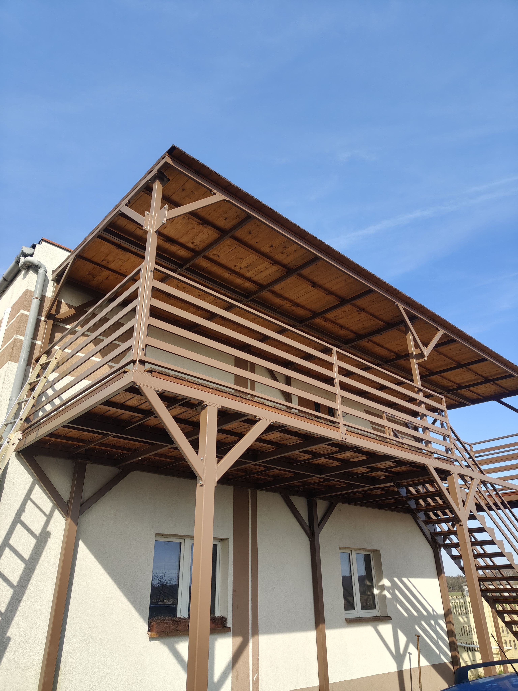

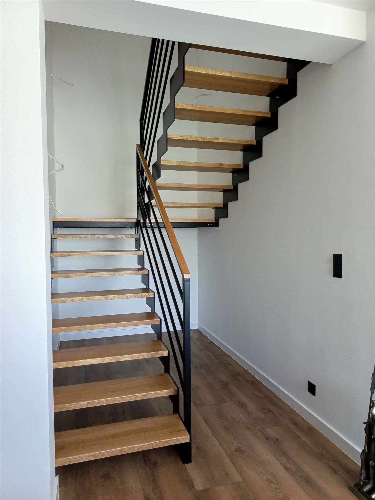

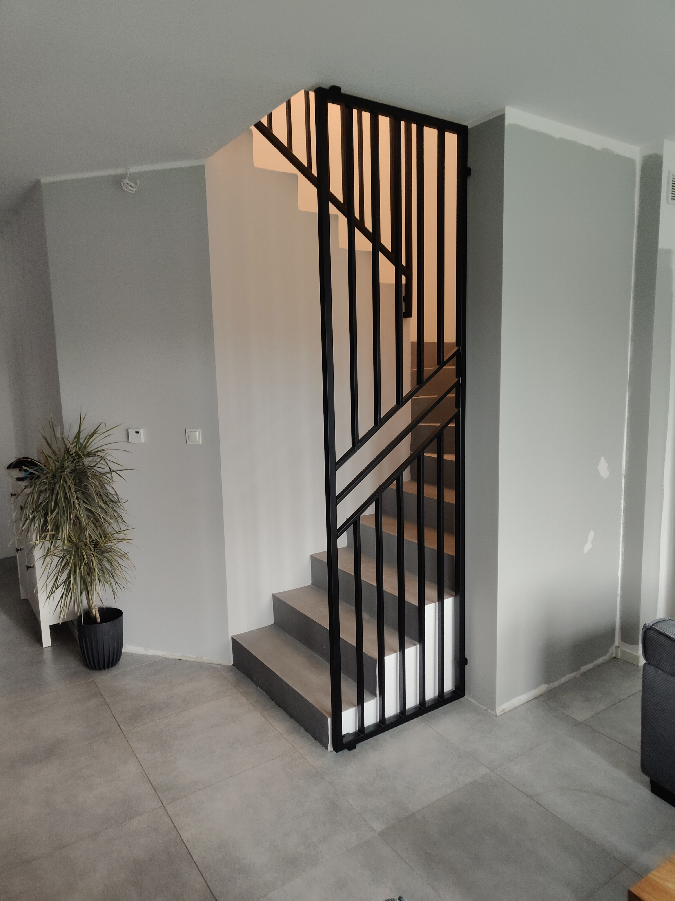
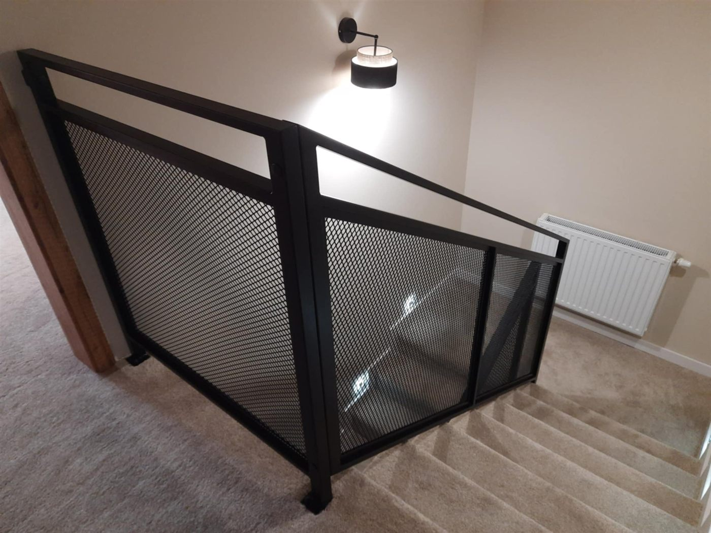
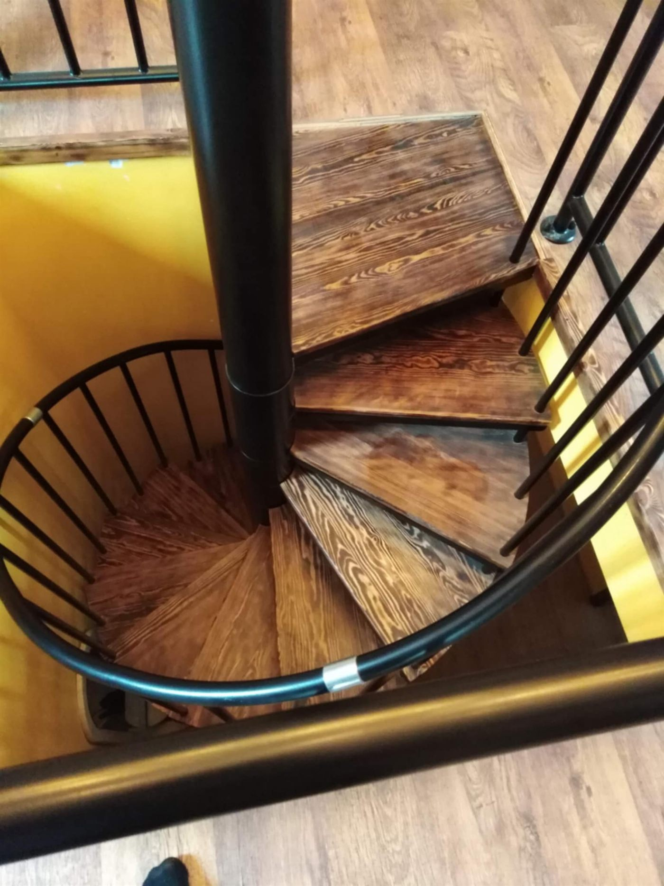
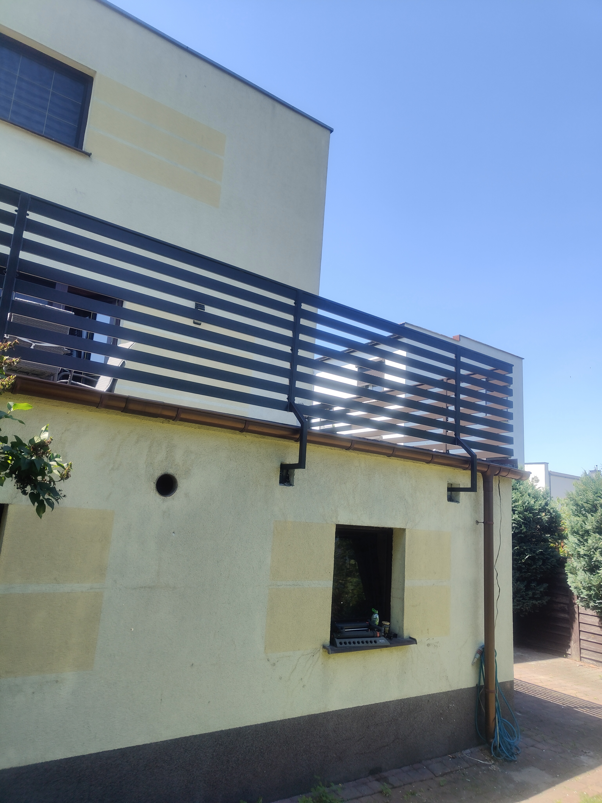
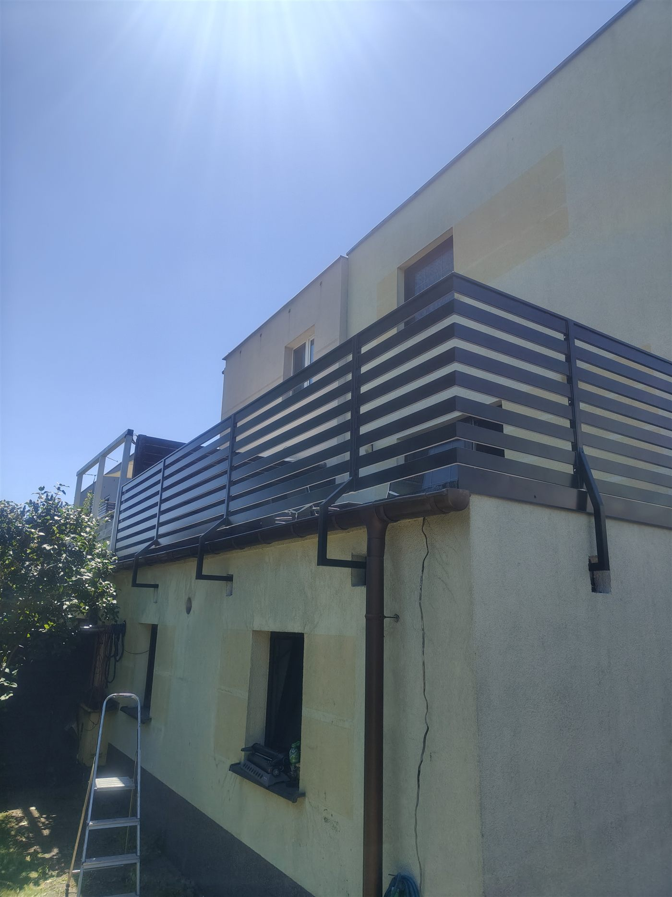
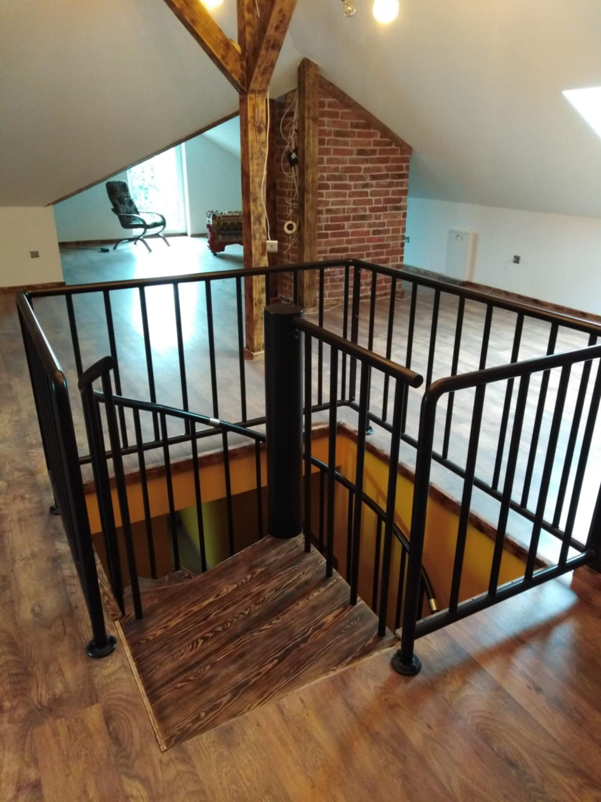
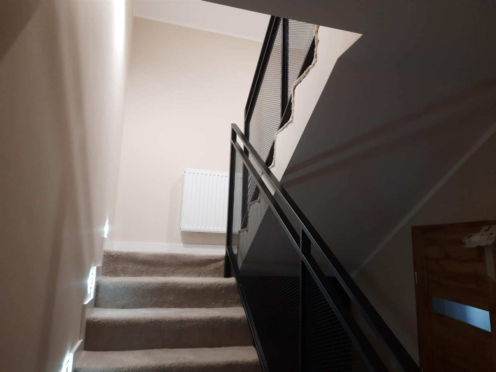
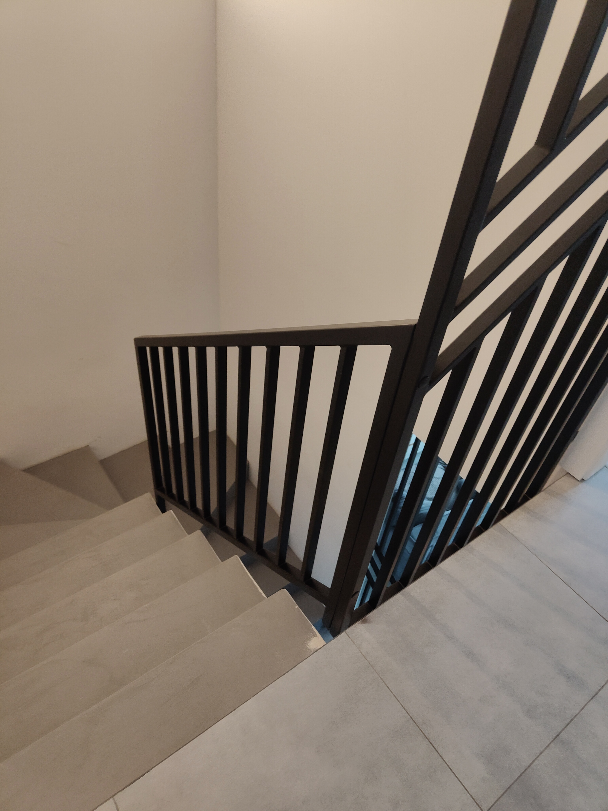
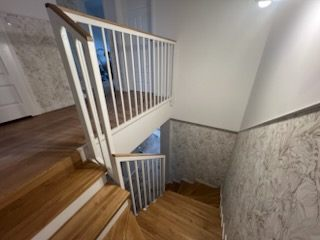
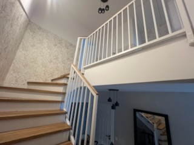
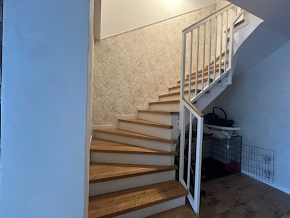
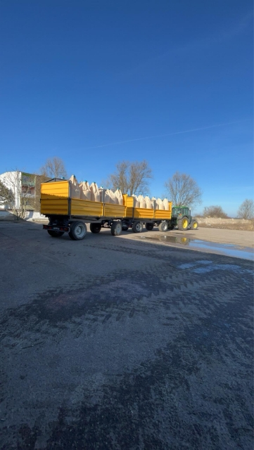
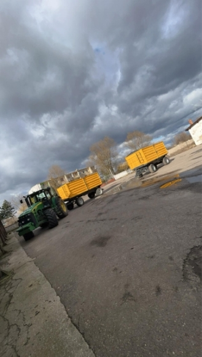
Pytania i odpowiedzi
Wykonujemy spoiny metodami TIG, MIG/MAG oraz MMA. Dobieramy technologię do rodzaju materiału — stal węglowa, nierdzewna i aluminium — oraz wymagań konstrukcyjnych projektu.
Tak. Nasi spawacze posiadają uprawnienia zgodne z normami PN-EN ISO 9606. Na życzenie klienta przygotowujemy dokumentację procesu spawania.
Wycena opiera się na oględzinach lub szczegółowym opisie zlecenia — materiał, wymiary, lokalizacja montażu i termin. Odpowiadamy w ciągu jednego dnia roboczego.
Tak. Realizujemy zlecenia w całej Wielkopolsce i okolicach — m.in. Poznań, Środa Wielkopolska, Słupca i Konin. Montaż na miejscu u klienta jest możliwy po ustaleniu warunków logistycznych.
Specjalizujemy się w balustradach i schodach stalowych, konstrukcjach tarasów i zadaszeń, wiatach garażowych, ogrodzeniach oraz elementach przemysłowych i rolniczych.
Kontakt
Opisz zapotrzebowanie — odpowiadamy w ciągu jednego dnia roboczego.